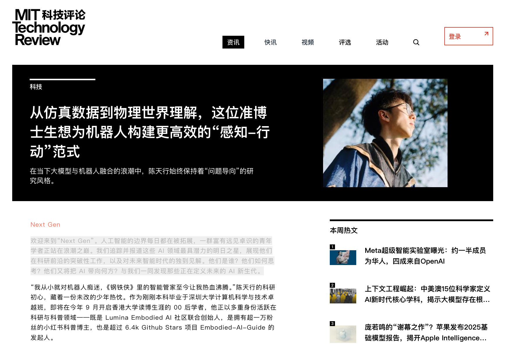
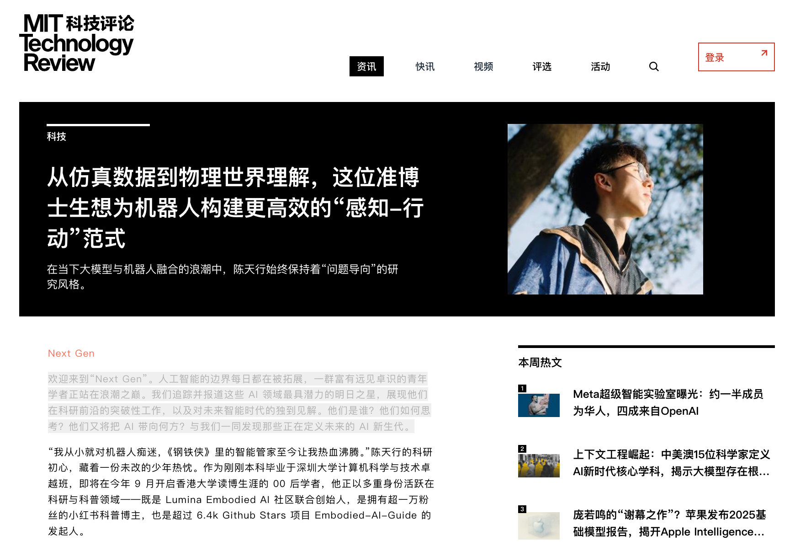
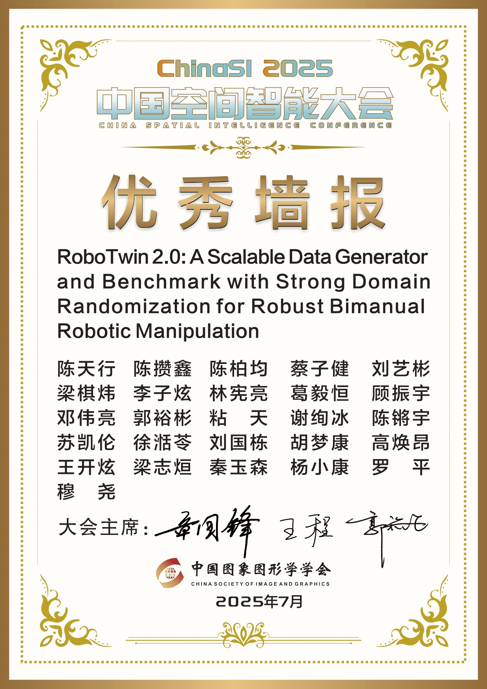
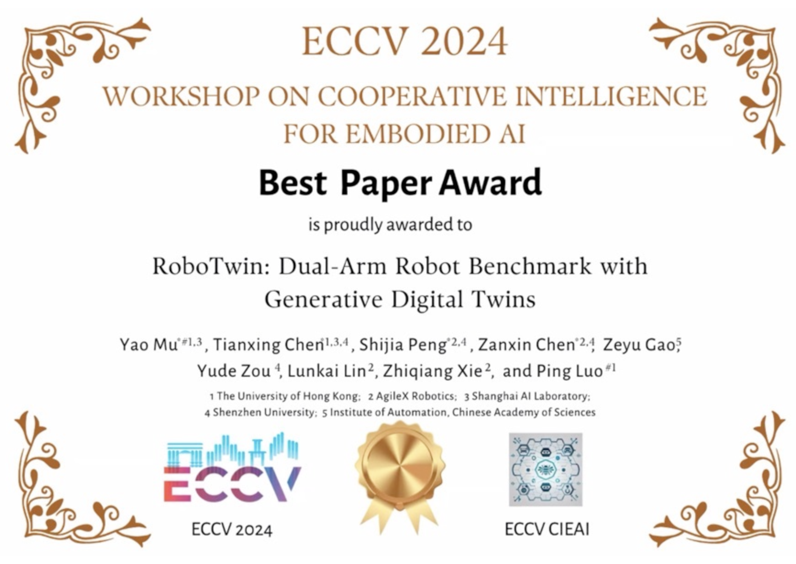

Longxu XU (许龙)

🎓 Year-1 PhD Student @ HKU-MMLab🤖 Embodied AI & Robotics Researcher🎙️ Co-Founder of Lumina Embodied AI Community


|
 |

Biography
Hi! I am Tianxing Chen (Chinese name: 陈天行), a first-year Ph.D. student at MMLab@HKU (since Sep. 2025), supervised by Prof. Ping Luo and working closely with Dr. Yao Mu. My research focuses on Embodied AI, including robotic foundation models, generalizable manipulation policies (e.g., VLA, diffusion policy), and robot data synthesizers.
I have published multiple papers at top venues such as CVPR, RSS, and ACL. My work received the Best Paper Award at the ECCV 2024 MAAS Workshop, an Outstanding Poster Award at ChinaSI, and a CVPR Highlight recognition. Beyond research, I have been honored with the CCF Elite Collegiate Award (99 nationwide) and the “Excellent Star of SZU”, the highest undergraduate honor at Shenzhen University (ranked 2/30,000). I also won a silver medal in the ACM-ICPC regional competition and was national runner-up in the RAICOM robotics developer competition.
I am the co-founder of Lumina Embodied AI Community, and have served as an organizer of the SIGGRAPH ASIA 2025 TriFusion Workshop, CVPR 2025 MEIS Workshop, the CVPR 2025 RoboTwin Dual-Arm Collaboration Challenge, and the Greater Bay Area Embodied AI Workshop. I am also a student committee member of the Autonomous Robotic Technology Seminar (ARTS). In addition, I share my thoughts on research and technology as a blogger and vlogger, with over 14k followers on Rednote 🎒@TianxingChen (陈天行).
中文版个人简介
Hi！我是陈天行 (English name: Tianxing Chen)，现在是香港大学MMLab@HKU的一年级博士生（始于2025年9月），师从罗平教授，并且与穆尧博士紧密合作。我的研究方向是具身智能，包括机器人通用操作策略、数据合成器、视觉基座模型等。
我在CVPR、RSS、ACL等学术顶会发表多篇论文，在ECCV 2024 MAAS Workshop上获得最佳论文奖，在ChinaSI中获得Outstanding Poster，获得CVPR Highlight等。我曾经获得CCF优秀大学生（全国年度99人）、荔园卓越之星（深圳大学本科生最高荣誉）等荣誉。竞赛上在ACM-ICPC国际大学生程序设计竞赛中获得银牌，在RAICOM机器人开发者大赛中获得赛道全国亚军。
我是Lumina具身智能社区的联合创始人，也曾作为组织者举办SIGGRAPH ASIA 2025 TriFusion Workshop、CVPR 2025 MEIS Workshop、CVPR 2025 RoboTwin双臂协作竞赛、大湾区具身智能研讨会等。担任ARTS自主机器人技术研讨会的学生委员会成员。同时，我还在小红书拥有超14k粉丝🎒@TianxingChen (陈天行)。
News
 



- [08/2025] 📢 I am organizing the TriFusion Workshop @ SIGGRAPH ASIA 2025, which is now calling for papers [Workshop] !
- [07/2025] 🎉 Interviewed by MIT Technical Review China (《麻省理工科技评论》中国), "Next Gen" Series [Report] !
- [07/2025] 🎉 RoboTwin 2.0 received Outstanding Poster at ChinaSI 2025 (Ranking 1st) 🏆 !
- [07/2025] 🎉 Graduated with a bachelor's degree from Shenzhen University !
- [07/2025] 📄 We released RoboTwin Dual-Arm Collaboration Challenge Technical Report @ CVPR 2025 MEIS Workshop [arXiv] !
- [06/2025] 📄 We released RoboTwin 2.0 [Webpage] !
- [05/2025] 🎉 My Rednote (小红书) has reached 10k followers !
- [05/2025] 🎉 Text2World and HiAgent are accepted to ACL 2025 !
- [04/2025] 🎉 My graduation thesis is graded A+ and selected as one of the university's top 100 outstanding theses. [Acknowledgements]
- [04/2025] 🎉 CordViP is accepted to RSS 2025 !
- [04/2025] 🎉 RoboTwin is selected as Highlight (13.5%) !
- [02/2025] 🎉 3 Papers (G3Flow, RoboTwin and DexHandDiff) are accepted to CVPR 2025 !
- [12/2024] Serving as an Organizer for the 2nd MEIS Workshop at CVPR 2025.
- [09/2024] 🎉 RoboTwin (Early Version) received the Best Paper Award at the ECCV 2024 MAAS Workshop !
- [04/2024] 🎉 One paper is accepted to ICARM 2024, which is my first paper 🌹 !
- [04/2024] 🎉 We won the National Gold Medal 🏅, Provincial Runner-up 🏆 of China Collegiate Computing Contest !
- [01/2024] 🧑💻 Joined Shanghai AI Laboratory as Intern Researcher. Started doing research on Robotics !
- [10/2023] 🎉 I received the highest honor for undergraduate students at Shenzhen University, "Excellent Star of SZU", ranked 2nd among the 30,000 undergraduates in the school (top 0.0067%) ! [Report]
- [10/2023] 🎉 I received CCF Elite Collegiate Award, which is awarded by China Computer Federation, to the top 99 students nationwide in 2023 ! [Report]
- [08/2023] 🎉 Our team won the National Runner-up 🏆 of RAICOM !
- [06/2023] 🧑💻 I started to lead the SZU Algorithm Training Team !
- [01/2023] 🎉 Our team (SZU_Tencent) won Silver Medal 🥈 in 46th ICPC Asia, Hong Kong !
Education

|
Shenzhen University (SZU) B.Eng. (currently studying) in Computer
Science and Technology
GPA 90.0 / 100, Excellent Star of SZU
(荔园卓越之星, top
0.0067%),
[Acknowledgements]
Sep. 2023 - Jul. 2026
|

|
MMLab, Nanchang Hongkong
Nanchang University
(HKU) BS. Student
supervised by Prof. Ping Luo.
Sep. 2019 - Jun. 2023
|
Publications | [My Google Scholar]

|
Influence Maximization in Hypergraphs based on Evolutionary Deep Reinforcement Learning
Long Xu*, Lijia Ma, Qiuzhen Lin, Lingjie Li, Maoguo Gong, Jianqiang Li †
Information Sciences
|
|
|
RoboTwin 2.0: A Scalable
Data Generator and Benchmark with Strong Domain Randomization for
Robust Bimanual Robotic Manipulation 
Tianxing Chen*,
Zanxin Chen*, Baijun Chen*, Zijian
Cai*, Yibin Liu*, Qiwei Liang, Zixuan Li,
Xianliang Lin, Yiheng Ge, Zhenyu Gu, Weiliang Deng, Yubin Guo, Tian
Nian, Xuanbing Xie, Qiangyu Chen, Kailun Su, Tianling Xu, Guodong
Liu, Mengkang Hu, Huan-ang Gao, Kaixuan Wang, Zhixuan Liang, Yusen
Qin, Xiaokang Yang, Ping Luo†, Yao Mu†
Under Review
|

|
Benchmarking Generalizable
Bimanual Manipulation: RoboTwin Dual-Arm Collaboration Challenge at
CVPR 2025 MEIS Workshop
Tianxing Chen*,
Kaixuan Wang*, Zhaohui Yang*, Yuhao
Zhang*, Zanxin Chen*, Baijun Chen*,
Wanxi Dong*, Ziyuan Liu, Dong Chen, Tianshuo Yang, Haibao
Yu, Xiaokang Yang, Yusen Qin, Zhiqiang Xie, Yao Mu†, Ping
Luo†, and All Competition Volunteers and
Participants
Official Technical Report of RoboTwin
Dual-Arm Collaboration Challenge @ CVPR 2025 MEIS Workshop
|

|
AutoBio: A Simulation and
Benchmark for Robotic Automation in Digital Biology Laboratory
Zhiqian Lan, Yuxuan Jiang, Ruiqi Wang,
Xuanbing Xie, Rongkui Zhang, Yicheng Zhu, Peihang Li, Tianshuo Yang,
Tianxing Chen, Haoyu Gao, Xiaokang Yang, Xuelong Li,
Hongyuan Zhang, Yao Mu†, Ping Luo†
Under Review 2025
|

|
AVR: Active Vision-Driven
Robotic Precision Manipulation with Viewpoint and Focal Length
Optimization
Yushan Liu*, Shilong
Mu*, Xintao Chao, Zizhen Li, Yao Mu, Tianxing
Chen, Shoujie Li, Chuqiao Lyu, Xiao-Ping Zhang, Fellow,
IEEE, Wenbo Ding†
Under Review 2025
|

|
Text2World: Benchmarking
Large Language Models for Symbolic World Model Generation
Mengkang Hu*, Tianxing
Chen*, Yude Zou*, Yuheng Lei, Ming
Li, Qiguang Chen, Hongyuan Zhang, Wenqi Shao, Ping
Luo†
ACL 2025
(findings)
|

|
CordViP:
Correspondence-based Visuomotor Policy for Dexterous Manipulation in
Real-World
Yankai Fu*, Qiuxuan
Feng*, Ning Chen*, ZiChen Zhou, Mengzhen Liu,
Mingdong Wu, Tianxing Chen, Shanyu Rong, Jiaming Liu,
Hao Dong and Shanghang Zhang†
RSS 2025
|

|
Embodied-AI-Guide 
Embodied-AI-Guide-Contributors,
Lumina-Embodied-AI-Community, Tianxing Chen (as Project
Founder), ...
Github
Repository
An entry path into Embodied
AI and a summary of high - quality information in this field. The
goal is to help newcomers quickly build up their understanding and
get started in Embodied AI.
|

|
G3Flow: Generative 3D
Semantic Flow for Pose-aware and Generalizable Object Manipulation

Tianxing Chen*,
Yao Mu*, Zhixuan Liang*, Zanxin Chen, Shijia
Peng, Qiangyu Chen, Mingkun Xu, Ruizhen Hu, Hongyuan Zhang, Xuelong
Li, Ping Luo†
CVPR 2025
|

|
RoboTwin: Dual-Arm Robot
Benchmark with Generative Digital Twins
Yao Mu*, Tianxing
Chen*, Zanxin Chen*, Shijia
Peng*, Zeyu Gao, Zhixuan Liang, Qiaojun Yu, Yude Zou,
Mingkun Xu, Lunkai Lin, Zhiqiang Xie, Mingyu Ding and Ping
Luo†
CVPR 2025 (Highlight,
top 13.5%)
|

|
DexHandDiff:
Interaction-aware Diffusion Planning for Adaptive Dexterous
Manipulation
Zhixuan Liang, Yao Mu, Yixiao Wang,
Tianxing Chen, Wenqi Shao, Wei Zhan, Masayoshi
Tomizuka, Ping Luo† and Mingyu Ding
CVPR 2025 & CVPR 2025
Humanoid Agents Workshop
|

|
Articulated Object
Manipulation using Online Axis Estimation with SAM2-Based
Tracking
Xi Wang*, Tianxing
Chen*, Qiaojun Yu*, Tianling Xu,
Zanxin Chen, Yiting Fu, Ziqi He, Cewu Lu†, Yao
Mu†, Ping Luo†
Under Review 2024
|

|
RoboTwin: Dual-Arm Robot
Benchmark with Generative Digital Twins (early version)
Yao Mu*, Tianxing
Chen*, Shijia Peng*, Zanxin
Chen*, Zeyu Gao, Zhiqian Lan, Yude Zou, Lunkai Lin,
Zhiqiang Xie, and Ping Luo†
ECCV 2024 MAAS Workshop (Best Paper
Award🏆)
|

|
HiAgent: Hierarchical
Working Memory Management for Solving Long-Horizon Agent Tasks with
Large Language Model
Mengkang Hu, Tianxing Chen,
Qiguang Chen, Yao Mu, Wenqi Shao and Ping Luo†
ACL 2025
(main)
|

|
ManiCM: Real-time 3D
Diffusion Policy via Consistency Model for Robotic Manipulation
Guanxing Lu*, Zifeng
Gao*, Tianxing Chen, Wenxun Dai, Ziwei
Wang, and Yansong Tang†
Under Review 2024
|

|
Robust UAV Policy Learning
for Urban Infrastructure Surface Screening
Bingging Du*, Uddin Md.
Borhan*, Tianxing Chen, Jianyong Chen,
Jiangiang Li†, and Jie Chen†
ICARM 2024
|
Honors & Academic Awards
|  |
Outstanding Poster at ChinaSI 2025 (Ranking 1st) 🏆
Ranking 1st actoss
all
61 posters in China Spatial Intelligence Conference 2025 (ChinaSI
2025) RoboTwin 2.0: A Scalable Data Generator and Benchmark with Strong Domain Randomization for Robust Bimanual Robotic Manipulation |
|  |
Best Paper Award at ECCV @ MAAS Workshop 2024 🏆
The only paper selected as Best Paper RoboTwin: Dual-Arm Robot Benchmark with Generative Digital
Twins
(early version)
|

|
CCF Elite Collegiate Award, CCF优秀大学生 (2023) [Report]
- Awarded by China Computer Federation (CCF)
- To the Top 99 students nationwide |

|
Excellent Star of Shenzhen University, 荔园卓越之星 (2023) [Report]
- The highest honor for undergraduate students at Shenzhen
University
- Ranked 2nd among the 30,000 undergraduates in the school (top 0.0067%) - The only junior to win the award in 2023 - The only award-winning student of college in the past 3 years, CNY 50,000 |

|
Excellent Star of Shenzhen University (Nominated), 荔园卓越之星提名奖
(2024)
- The highest honor for undergraduate students at Shenzhen
University
- Ranked 1st among the nominated undergraduates in the school - CNY 30,000 |
- [2024] Excellent Star of SZU (Nominated), the highest honor for undergraduate students at Shenzhen University, CNY 30,000
- [2024] Liyuan Star Scholarship, the highest honor for college-level undergraduates, CNY 20,000
- [2024] First Prize of Scholarship for Top Innovative Talents, ranked first in the selection, CNY 12,000
- [2023] First Prize of Innovation & Entrepreneurship Star (Individual), CNY 3,000
- [2024] First Prize of Innovation & Entrepreneurship Star (Team), CNY 3,000
- [2024] Second Prize for Outstanding Student Leaders, CNY 2,000
- [2022] Second Prize of Study Star, CNY 2,000
- [2023] Liyuan Star Scholarship, the highest honor for college-level undergraduates, CNY 20,000
- [2023] Pengcheng Scholarship, 71 students selected from 30,000 undergraduate students, CNY 10,000
- [2023] Outstanding Student Leader of Shenzhen University
- [2023] First Prize of Scholarship for Top Innovative Talents, ranked first in the selection, CNY 12,000
- [2023] First Prize for Outstanding Student Leaders, the only class leader among the first prize, CNY 3,000
- [2023] First Prize of Innovation & Entrepreneurship Star (Individual), CNY 3,000
- [2023] Second Prize of Charity Star, CNY 2,000
- [2023] Second Prize of Study Star, CNY 2,000
- [2023] First Prize of Innovation & Entrepreneurship Star (Team), CNY 3,000
- [2023] Third Prize of Cultural and Sports Star (Team), CNY 2,000
- [2023] Advanced class collective, ranked first in grade (served as monitor), CNY 1,000
- [2022] Liyuan Star Scholarship, the highest honor for college-level undergraduates, CNY 20,000
- [2022] First Prize of Scholarship for Top Innovative Talents, ranked first in the selection, CNY 12,000
- [2022] First Prize of Innovation & Entrepreneurship Star (Individual), CNY 3,000
- [2022] Second Prize of Study Star, CNY 2,000
- [2022] Advanced class collective, ranked first in grade (served as monitor), CNY 1,000
- [2021] Full tuition scholarship for top innovative talents, CNY 6,000
Competition Awards (Selected)

|
(ACM-ICPC) International Collegiate Programming Contest Regional
Contest
Silver Medal 🥈 With Yuanjie He, Yifei Liu. Supervised by
Prof. Jianbin Qin.
Team: SZU_Tencent
|

|
RoboCom Robot Development Competition (RAICOM)
National Runner-up 🏆 With Weili Li, Jiaxuan Li. Supervised by
Dr. Jie
Chen.
|